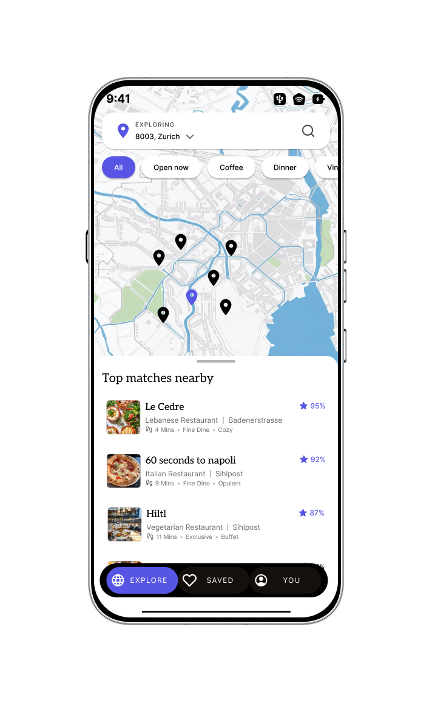

MainStreet. AI-curated local discovery for busy people in Swiss cities.
A predictive, route-aware discovery feed that replaces the ritual of checking Google Maps for ratings, Instagram for vibe, TikTok for food and friends for a sanity check.



Finding a good local spot takes four apps and still often ends in a mediocre experience, while independent businesses can’t reach the people walking past them.
Defined the problem, users and scope, designed an AI matching model around daily routes, tested 3 concepts quickly with AI prototyping tools, and set success metrics and an experiment plan.
A mobile MVP concept with route-aware AI recommendations, separate flows for users and businesses, and a plan to test it.
01Why I Built This
02The Problem
03Target Users
04Product Hypothesis
Monetisation to test: businesses already join through their own onboarding flow, so a paid visibility tier for local businesses is the first pricing hypothesis.
05Scope Decisions
| Decision | In / out | Reasoning |
|---|---|---|
| Native mobile apps (iOS & Android) | In | The value depends on live location and passive route learning. |
| Web app | Out | No live location or route learning; a phone in hand is the real context of use. |
| Separate user and business onboarding | In | Both sides of the marketplace need to be onboarded from day one. |
| Pre-permission location screen | In | Route learning needs location access, so the value exchange is explained before the OS prompt to protect opt-in rates. |
06How the AI Works
Ranking places by fit for this person, on this route, right now.
Trust is a product requirement, not a nice-to-have: the “Pattern detected” banner appears once, then the app curates quietly. A utility that gets noisy about tracking loses users.
07Testing Concepts Fast with AI Tools
Instead of weeks of manual mock-ups, I generated three concepts with AI prototyping tools in days, then used their gaps to make the key product calls.
| Tool tested | What it showed | Decision it led to |
|---|---|---|
| Lovable | Match scores alongside the map work; splitting Home and Map into two tabs adds friction | One map-first home screen, no separate map tab |
| Figma Make | No list to browse suggestions and no signal of where the search is happening | Always show location context; add a list alternative |
| Google Stitch | One question per onboarding screen keeps effort low; no way to apply or see learned routes | Single-question onboarding; one menu for current location and learned routes |
08The Product

09Experiment Plan
Does knowing your route beat knowing where you are?
Planned experiment; not yet run.
| Variant A: route-aware | Variant B: nearby-only | |
|---|---|---|
| Idea | Recommend spots along the routes the user already takes | Recommend spots near the user’s current location, as map apps do |
| Hypothesis | Picks that fit the day’s path convert better | Proximity alone is enough (the null: no edge for MainStreet) |
| Primary metric | Feed conversion rate | Feed conversion rate |
| Guardrail | Time-to-value | Time-to-value |
This is the test that decides whether the product has an edge: if route-awareness doesn’t win, MainStreet is just another map.
10Success Metrics
| Metric | Definition | Why |
|---|---|---|
| Time-to-value (TTV) | Time from install to the first saved or visited place | Proves the app delivers before users give up |
| Feed conversion rate (FCR) | Share of feed sessions that lead to directions, a save or a visit | The core test of recommendation quality |
| Implicit feedback | Taps, saves, dwell and visits per user | Trains the model and shows real interest |
| Explicit feedback | Ratings and “not my vibe” dismissals | Fast correction signal for bad matches |
| Weekly active users (WAU) | Users opening the app at least once a week | Habit: MainStreet becomes the default way to choose |
11Key Product Decisions
12Next Steps
- Usability-test the MVP with expats and students in Zürich, starting with people like my sister who moved recently.
- Run the route-aware vs nearby-only experiment to test the core hypothesis on feed conversion.
- Onboard independent businesses in one neighbourhood to test the business side and the paid visibility hypothesis.